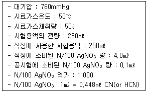
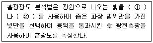
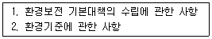

대기환경산업기사 (2002-09-08 기출문제)
1과목: 대기오염개론
1. 입자상 대기오염물질의 특성에 관한 설명으로 틀린 것은?
- 먼지의 모양은 다양하고 매우 불규칙하다.
- 공기 중에 부유하고 있는 입자의 크기는 대략 0.01~100㎛이다.
- 입자의 화학적 성분은 발생원에 따라 구성하는 성분이 다르며 또한 입자의 크기에 따라서도 성분이 다르게 나타난다.
- 먼지의 형테는 등축형, 판형, 섬유형으로 분류하며 최근에 석면흡입에 의한 건강상 위해의 문제가 되는 것은 등축형 형태이다.
(정답률: 알수없음)

2. 다음 주 조혈기능의 장애를 일으키는 물질로 가장 대표적인 것은?
- 벤젠
- 크롬
- 인
- 황
(정답률: 알수없음)
3. 염소(Cl2 : 분자량 71) 1V/V ppm에 상당하는 W/W ppm은? (단, 0℃, 1기압, 공기밀도 1.293㎏/m3 기준)
- 2.45
- 2.98
- 3.24
- 3.69
(정답률: 알수없음)
4. N2O, NO2, NO 및 NH3는 모두 질소산화물인데 이들 중 광화학 반응에 크게 작용하지 않는 오염물질은?
- NO2
- NO
- NH3
- N2O
(정답률: 알수없음)
5. 다음 그림은 탄화수소가 존재하지 않는 경우, NO2의 광화학싸이클(Photolytic cycle)을 설명한 것이다. 그림의 A 및 B 에 해당하는 물질은? (문제 오류로 문제 및 보기 내용이 정확하지 않습니다. 정확한 내용을 아시는 분께서는 오류신고를 통하여 내용 작성 부탁드립니다. 정답은 1번입니다.)
- A = O2 , B = O2
- A = O2 , B = NO
- A = O2 , B = NO2
- A = O2 , B = CO2
(정답률: 알수없음)
6. 다음 중 2차 대기오염물질과 가장 거리가 먼 것은?
- H2S
- NOCl
- SO2
- SO3
(정답률: 알수없음)
7. 200℃, 1atm에서 이산화황의 농도가 2g/m3이다. 표준상태에서는 몇 ppm 인가?
- 986
- 1213
- 1759
- 2314
(정답률: 알수없음)
8. 오존(O3)에 관한 설명으로 알맞지 않은 것은?
- 대류권의 오존은 국지적인 광화학 스모그로 생성된 옥시단트의 지표물질이다.
- 온실가스로 작용한다.
- 오염된 대기 중의 오존은 LA 스모그 사건으로 처음 확인 되었다.
- 대기 중에서 오존의 배경농도는 0.1~0.2ppm 정도이며 청정지역에서 오존농도의 일변화는 크지 않다.
(정답률: 알수없음)
9. 다음 중 인체에 흡입되었을 때 발열(금속증기열)을 가져오는 물질로 가장 일반적인 것은?
- 수은, 카드뮴
- 크롬, 납
- 아연, 망간
- 구리, 납
(정답률: 알수없음)
10. '공기역학적 직경' 의 정의로 가장 알맞은 것은?
- 본래의 먼지보다 침강속도가 작은 구형입자의 직경
- 본래의 먼지보다 침강속도가 큰 입자의 직경
- 본래의 먼지와 밀도 및 침강속도가 동일한 구형입자의 직졍
- 본래의 먼지와 침강속도가 동일하며, 밀도 1g/cm3인 구형입자의 직경
(정답률: 알수없음)
11. 실내 공기 오염의 지표가 되는 것은?
- SO2
- NOX
- CO2
- CO
(정답률: 알수없음)
12. 다이옥신의 대표적인 물리적 성질을 알맞게 나타낸 것은?
- 열적불안정, 높은 증기압, 높은 수용성
- 열적안정, 낮은 증기압, 높은 수용성
- 열적불안정, 높은 증기압, 낮은 수용성
- 열적안정, 낮은 증기압, 낮은 수용성
(정답률: 알수없음)
13. 시골지역의 분진에 의한 빛 흡수율을 조사하기 위하여 직경 120mm인 여과지에 500ℓ/분의 속도로 10시간 동안 포집하여 빛전달율을 측정하니 60% 였다. 1000m당 Coh는?
- 약 0.28
- 약 0.42
- 약 0.84
- 약 1.68
(정답률: 알수없음)
14. 다음 중 황화수소의 배출과 가장 관련이 깊은 업종은?
- 도금공업
- 금속제련공업
- 요업
- 석유정제업
(정답률: 알수없음)
15. 다음의 미기상학에 관련된 용어 설명 중 틀린 것은?
- 대류권 : 지표면에 상공 11㎞ 까지로 구름, 비 등의 기상현상이 일어난다.
- down wash : 바람이 불어오는 쪽의 반대로 부압 영역이 생겨 연기가 말려 들어가는 현상
- 열섬효과 : 교외지역에 비해 도시지역에 고온의 공기층을 형성하는 현상
- 복사역전 : 장기간의 대기오염물의 축적으로 대기 오염물질를 야기 시킨다.
(정답률: 알수없음)
16. 다음 그림 중 온도의 연직분포와 연기확산 형태, 그리고 명칭을 나타낸 것이다. 바르게 연결된 것은? (문제 오류로 문제 및 보기 내용이 정확하지 않습니다. 정확한 내용을 아시는 분께서는 오류신고를 통하여 내용 작성 부탁드립니다. 정답은 1번입니다.)
- 복원중
- 복원중
- 복원중
- 복원중
(정답률: 알수없음)
17. 대기오염농도를 추정하기 위한 '경자모델' 의 이론을 전개하기 위한 가정이라 볼수 없는 것은?
- 고려되는 공간에서 오염물의 농도는 균일하다.
- 오염물 방출원이 지면전역에 균등히 분포되어 있다.
- 오염원은 방출과 동시에 균등하게 혼합된다.
- 오염물의 분해는 0차반응에 의한다.
(정답률: 알수없음)
18. 하루 10000톤의 석탄(탄소로 구성)을 연로로 화력발전을 할 경우 하루에 소모되는 공기(ton/day)? (단, 공기 중 산소가 약 23.2%(무게기준) 함유, 완전연소, 표준상태로 가정)
- 약 198000
- 약 154000
- 약 115000
- 약 103000
(정답률: 알수없음)
19. 바람에 관여하는 힘 중에서 바람발생의 근본 원인이 되는 것은?
- 전향력
- 원심력
- 마찰력
- 기압경도력
(정답률: 알수없음)
20. 다음 광화학 스모그 생성에 대해 올바르게 설명한 것은?
- 습기가 높고 가시거리가 짧다.
- 대기중 먼지와 SO2 농도가 높다.
- 대기가 불안정하여 수평방향의 확산이 잘 이루어 진다.
- 여름철 태양의 일사량이 많다.
(정답률: 알수없음)
2과목: 대기오염 공정시험 기준(방법)
21. 공정시험법방법에서 정하고 있는 온도에 대한 설명으로 틀린 것은?
- 상온 : 15 ~ 25℃
- 찬곳 : 0 ~ 15℃
- 온수 : 45 ~ 60℃
- 열수 : 약 100℃
(정답률: 알수없음)
22. 대기오염공정시험방법에서 환경대기중의 옥시단트 측정법의 하나인 화학발광법(자동연속측정법)의 측정원리 및 성능에 대한 설명 중 틀린 것은?
- 측정 범위는 원칙적으로 최대 1.5ppm O3로 한다.
- 오존과 에틸렌 가스가 반응할 때 생기는 발광도가 오존농도와 비례관계가 있다는 것을 이용한다.
- 최저 감지 농도는 0.003ppm이다.
- 방해 물질로는 수분에 대해 약간 영향을 받는다.
(정답률: 알수없음)
23. 배출허용기준중 표준산소농도를 적용받는 항목에 대하여 배출가스유량을 보정하기 위한 식으로 적절한 것은?
- 배출가스유량= 이론배출가스유량 ÷ [(21 - 표준산소농도)/이론산소농도]
- 배출가스유량= 이론배출가스유량 ÷ [이론산소농도/(21 - 표준산소농도)]
- 배출가스유량= 실측배출가스유량 ÷ [(21- 표준산소농도)/(21 - 실측산소농도)]
- 배출가스유량=실측배출가스유량 ÷ [(21 - 실측산소농도)/(21 - 표준산소농도)
(정답률: 알수없음)
24. 굴뚝단면이 원형일 경우, 굴뚝반경이 1.5m 일 때 먼지를 측정하기 위한 측정점수로 적절한 것은?
- 12
- 14
- 16
- 18
(정답률: 알수없음)
25. Ortho Toluidine 법에 의한 Cl2 가스 정량시 온도는?
- 약 20℃
- 약 30℃
- 약 40℃
- 약 26℃
(정답률: 알수없음)
26. 배출가스중의 포름알데히드를 측정하기 위해 적용되는 분석방법으로 적절한 것은?
- 페놀디슬폰산법
- 중화법
- 오르토톨리딘법
- 크로모트로핀산법
(정답률: 알수없음)
27. 하이볼륨에어샘플러를 사용하여 비산먼지농도를 측정하고자 한다. 풍속이 0.5m/sec 미만 또는 10m/sec 이상되는 시간이 전 채취시간의 50% 미만일 때 풍속에 대한 보정 계수는?
- 1.0
- 1.2
- 1.4
- 1.5
(정답률: 알수없음)
28. 환경기준시험법상 시료채취 위친선정에 관한 설명으로 틀린 것은?
- 시료채취의 높이는 그 부근의 최대오염도를 나타낼수 있는 곳으로 한다.
- 시료채취의 높이는 가능한한 1.5~10m 범위로 한다.
- 주위에 건물등이 밀집되거나 접근되어 있을 경우에는 건물 바깥벽으로부터 적어도 1.5m이상 떨어진 곳에 채취점을 선정한다.
- 주위에 건물이나 수목 등의 장애물이 있을 경우에는 채취위치로 부터 장애물까지의 거리가 그 장애물 높이의 2배이상인 곳을 선정한다.
(정답률: 알수없음)
29. 화학분석의 일반사항 내용 중 틀린 것은?
- 액의 농도가 (1→2)로 표시된 것은 용질 1g 또는 1mL를 용매에 녹여 전량을 2mL로 하는 것이다.
- 황산 (1+2), 황산(1 : 2)라 표시한 것은 황산 1용량에 물 2용량을 혼합 것이다.
- 보통 용액이라 기재하며 그 용액의 이름을 밝히지 않는 것은 수용액을 뜻한다.
- 방울수라함은 20℃에서 정제수 10방울을 떨어 뜨릴 때 부피 약 1mL(0.1mL/방울)가 된다.
(정답률: 알수없음)
30. 배출가스시료를 채취하여 질산은 적정법으로 시안화수소를 측정하기 위하여 다음과 같은 측정치를 얻었다. 시안화수소 용량 농도는?

- 41ppm
- 48ppm
- 56ppm
- 59ppm
(정답률: 알수없음)
31. 악취측정을 위한 공기희석관능법의 시료채취장치에관한 설명으로 틀린 것은?
- 냄새주머니의 재질은 테프론 또는 이보다 취기흡착성이 낮은 것으로 한다.
- 냄새주머니의 내용적은 3 - 20L 정도의 것으로 한다.
- 시료채취펌프는 흡입유량이 5L/분 이상인 판막식펌프로 취기흡착성이 낮은 재질로 한다.
- 냄새주머니를 다시 사용하는 경우는 신선한 공기로 3회이상 세척한다.
(정답률: 알수없음)
32. 피토관과 마노미터로 굴뚝 배출가스의 평균동압을 측정한 결과 15mmH20 였다. 유속은 얼마인가? (단, 피토우관 계수는 0.84, 굴뚝 내 배출가스 밀도(γ)는 0.8㎏/Sm3 로 한다.)
- 11.6 m/sec
- 16.1 m/sec
- 19.2 m/sec
- 21.9 m/sec
(정답률: 알수없음)
33. ( )안에 가장 알맞은 것은?

- ① 슬릿, ② 필터
- ① 단색화장치, ② 회적격자
- ① 필터, ② 단색화장치
- ① 회절격자, ② 슬릿
(정답률: 알수없음)
34. 대기오염공정시험방법상 다음 시약이 단순히 표시되었을 때 가장 높은 농도(%)를 나타내는 것은? (단, 별표 규정이 없으며 비중은 고려하지 않음)
- 질산
- 염산
- 초산
- 인산
(정답률: 알수없음)
35. 대기중의 가스상 물질의 시료채취방법 중 [ 채취관-여과재-포집부-흡입펌프-유량계]으로 구성된 것은?
- 용매포집법
- 여과포집법
- 직접포집법
- 흡입포집법
(정답률: 알수없음)
36. 분석대상 가스별(분석방법)흡수액으로 틀린 것은?
- 염화수소(질산은법) - 수산화나트륨용액(0.1N)
- 황산화물(침전적정법) - 과산화수소용액(10%)
- 황화수소(흡광광도법) - 아연아민착염용액
- 불소화합물(흡광광도법) - 수산화나트륨용액(0.1N)
(정답률: 알수없음)
37. 굴뚝배출 가스중의 수분을 측정한 결과 건조배출 가스 1Nm3당 60g 이었다면 건조배출 가스에 수분의 용량비는?
- 3.4%
- 5.5%
- 6.5%
- 7.5%
(정답률: 알수없음)
38. 저용량공기포집기(Low Volume Sampler)사용시 주의 사항으로 알맞은 내용은?
- 흡인펌프는 약 2년간(약 10,000시간)사용후에 날개를 교환한다.
- 일반적으로 유량계의 설계온도는 25℃가 있으므로 온도보정의 영향은 적지만 ±10℃ 차에 대하여 오차 범위는 ± 5% 이하이다.
- 유량계를 청소할 때는 눈금교정을 한다.
- 유량계는 연2회 이상 증류수로 씻는다.
(정답률: 알수없음)
39. 화학반응 등에 따라 굴뚝 등에서 배출되는 배출가스 중의 황화수소를 측정할 수 있는 시험방법은?
- 요오드 측정법
- 오르토 톨리딘법
- 질산은 적정법
- 티오시안산 제이수은법
(정답률: 알수없음)
40. 원자 흡광광도법에 대한 원리를 가장 적절하게 설명한 것은?
- 여기상태의 원자가 기저상태로 될 때 특유의 파장량을 흡수하는 현상 이용
- 기저상태의 여기상태로 될 때 특유 파장량을 흡수 하는 현상 이용
- 기저 상태의 원자가 원자증기층을 투과하는 특유 파장의 빛을 흡수하는 현상 이용
- 여기상태의 원자가 원자증기층을 투과하는 특유 파장을 흡수하는 현상 이용
(정답률: 알수없음)
3과목: 대기오염방지기술
41. C8H18의 공기 연료비(부피기준-moles air/mole fuel)은? (단, 건조공기는 N2 79% , O2 21%의 부피비를 갖는다.)
- 12.5
- 25.0
- 47.0
- 59.5
(정답률: 알수없음)
42. 세정 집진장치로 사용되는 충전탑의 겉보기 처리 가스 속도는 어느 범위가 가장 적절한가?
- 0.1 m/s이하
- 0.3 ~ 1 m/s
- 1.5 ~ 2 m/s
- 2 ~ 5 m/s
(정답률: 알수없음)
43. 공기중의 산소를 필요로 하지 않고 분자 자신속의 산소에 의해서 내부 연소하는 물질은?
- 벤젠
- 알코올
- 니트로글리세린
- 코우크스
(정답률: 알수없음)
44. 분자식이 CmHn인 탄화수소가스 1Sm3의 완전연소에 필요한 이론산소량(Sm3)은?
- m + 0.25n
- 4.8m + 1.2n
- m + 0.56n
- 0.21m + 0.79n
(정답률: 알수없음)
45. 여과집진장치에서 분진을 제거할 때 백필터(bag filter)에 부착된 먼지층을 주기적으로 떨어지는 조작이 필요한데 백필터의 단위면적당 누적먼지량을 먼지부하 M(g/m2)이라 한다. 배출가스의 유입농도 8g/m3를 유출농도 0.5g/m3로 제거하고자 백필터의 여과속도를 1.0㎝/sec로 운전한다. 만일 M 값이 160g/m2에 도달할 때 먼지를 탈락시킨다면 먼지층을 몇 분마다 떨어야 하는가?
- 21.2
- 26.5
- 30.4
- 35.6
(정답률: 알수없음)
46. 현재 500㎎/m3의 분진이 배출되고 있는 시설에 50% 효율이 있는 전처리 장치를 설치하였다. 이 시설의 배출허용기준은 10㎎/m3인데, 집진율이 몇 %이상인 2차 처리 장치를 설치하면 배출허용기준을 맞출수 있겠는가?
- 92%
- 94%
- 96%
- 98%
(정답률: 알수없음)
47. 먼지의 모양 중 다른 두축이 매우 짧은 길이를 가진 반면에 한 축이 매우 긴 먼지형태로 최근의 석면의 흡읍에 의한 건강상 위해가 문제가 되고 있는 것은?
- 등축형
- 섬유형
- 장축형
- 판형
(정답률: 알수없음)
48. 수소가스 1Sm3의 이론 연소공기량은 대략 몇 Sm3인가?
- 2.5
- 5.0
- 7.5
- 10.0
(정답률: 알수없음)
49. 중량비로 탄소 90%, 수소 10%로 이루어진 액체연료를 완전연소 시킬 경우 배출되는 배기가스 중의최대 CO2농도(%)는? (단, 연료 1㎏ 당 연료 이론 건조배기가스량은 12.5Sm3로 가정한다.)
- 5.0%
- 10.3%
- 13.5%
- 18.3%
(정답률: 알수없음)
50. 회분이 0.1%인 중유를 연소시키고자 한다. 건조배출가스량은 중유 1㎏당 15Sm3이고 건조배출가스 중의 분진농도는 0.2g/Sm3이다. 분진중의 미연분(未燃分)은?
- 약 32%
- 약 45%
- 약 53%
- 약 67%
(정답률: 알수없음)
51. 후드의 유입계수가 0.7 , 속도압이 17mmH2O일 때 후드의 압력손실(ㅿP)은?
- 35 mmH2O
- 27 mmH2O
- 18 mmH2O
- 12 mmH2O
(정답률: 알수없음)
52. 유체가 관로를 흐를 때 발생되는 압력손실에 대한 설명으로 알맞지 않은 것은?
- 유체의 밀도에 반비례한다.
- 관의 내경에 반비례한다.
- 관의 길이에 비레한다.
- 유체의 평균유속의 제곱에 비례한다.
(정답률: 알수없음)
53. 스토크의 법칙을 만족하는 입자의 침강속도 설명 중 틀린 것은?
- 입자와 유체의 밀도차에 비례한다.
- 입자 직경의 제곱에 비례한다.
- 가스의 점도에 비례한다.
- 중력가속도에 비례한다.
(정답률: 알수없음)
54. 배기가스의 탈황방법 중 중유의 탈황법의 설명으로서 가장 적당치 않은 것은?
- 금속 산화물에 의한 흡착 방법
- 미생물에 의한 방법
- 비중에 의한 방법
- 방사선 화학에 의한 방법
(정답률: 알수없음)
55. 화학적 흡착에 설명으로 가장 거리가 먼 것은?
- 대부분의 흡착제가 고체이다.
- 여러층의 흡착층이 가능하다.
- 흡착제의 재생성이 낮다.
- 흡착열이 물리적 흡착에 비하여 높다.
(정답률: 알수없음)
56. 액화천연가스(LNG)와 액화석유가스(LPG)에 대한 서술로서 틀린 것은?
- LNG의 주성분은 메탄이다.
- LPG의 주성분은 프로판과 부탄이다.
- 발열량은 LPG보다 LNG가 높다.
- LPG의 밀도는 공기보다 높다.
(정답률: 알수없음)
57. 다음 기체 중 물에 대한 헨리상수가 가장 큰 물질은?
- HF
- HCl
- H2S
- SO2
(정답률: 알수없음)
58. 유해가스처리를 위한 흡수장치 중 분무탑에 관한 설명으로 틀린 것은?
- 구조가 간단하고 압력손실이 적다.
- 충전탑에 비하여 설치비나 유지비가 싸다.
- 분무노즐이 막히기 쉽고 물방울을 미세하게 만들기 위하여 많은 동력이 퓔요하다.
- 침전물이 생기는 경우에 사용이 어렵다
(정답률: 알수없음)
59. 다음 중 싸이크론 집진장치에서 50%의 효율을 집진하는 입자의 크기를 나타낸는 것은?
- 임계입경
- 한계입경
- 절단입경
- 분배입경
(정답률: 알수없음)
60. 상온상압의 함진공기 100m3/min을 지름 26㎝ , 유호길이 3m 되는 원통형 Bag filter로 처리하려하면 가스처리속도를 1.5m/min 할 때 소요되는 Bag 수는?
- 21개
- 28개
- 33개
- 41개
(정답률: 알수없음)
4과목: 대기환경 관계 법규
61. 환경친화기업의 지정에 관한 내용으로 틀린 것은?
- 환경친화기업으로 지정된 사업장에 대하여는 환경부령이 정하는 바에 따라 허가를 신고로 대신할 수 있다.
- 환경친화기업으로 지정받고자 하는 사업자는 환경부령이 정하는 바에 따라 지정신청을 하여야 한다.
- 환경부정관은 환경친화기업 지정기준등 지정에 관한 세부사항을 산업자원부장관과 협의하여 환경부령으로 정한다.
- 산업자원부장관이 인정한 환경경영체계 인증기업에 대하여는 환경친화기업 지정시 우선 고려하여햐 한다.
(정답률: 알수없음)
62. 생활악취시설에 관한 내용으로 틀린 것은?
- 농수산물유통 및 가격안정에 관한 법률에 의한 농수산물도매시장, 농수산물공판장
- 수질환경보전법에 의한 하수종말처리시설
- 폐기물관리법에 의한 페기물의 보관시설
- 공중위생관리법에 의한 세탁업의 시설
(정답률: 알수없음)
63. 악취시설물질을 소각한 자에 대한 벌칙기준으로 적절한 것은?
- 1년이하의 징역 또는 500만원이하의 벌금
- 200만원의이하의 벌금
- 100만원의이하의 벌금
- 100만원의이하의 과태료
(정답률: 알수없음)
64. 다음 중 오염도 검사기관이 아닌 것은? (단, 지방환경청=지방환경관리청)
- 특별시,광역시,도의 보건환경연구원
- 환경보전협회
- 환경관리공단법에 의한 환경관리공단
- 지방환경(관리)청
(정답률: 알수없음)
65. 대기오염경보 발령시 포함되어야 할 사항과 거리가 먼 것은?
- 경보의 대상지역
- 경보단계
- 경보지속예상시간
- 오염물질의 농도
(정답률: 알수없음)
66. 대기환경보전법상 악취측정방법과 가장 거리가 먼 것은?
- 직접관능법
- 공기희석관능법
- 기기분석법
- 식염수법
(정답률: 알수없음)
67. 사업자가 개선명령 처분을 받아 개선계획서를 제출하려한다면 개선명령받은날 부터 몇일 이내로 하여야 하는가?
- 10일이내
- 12일이내
- 20일이내
- 30일이내
(정답률: 알수없음)
68. 대기환경보전법 규정에 따라 해당시설에 조업정지처분에 갈음하여 부과할 수 있는 과징금의 최대액수는?
- 3억원
- 2억원
- 1억원
- 5천만원
(정답률: 알수없음)
69. 특정대기유해물질이 아닌 것은?
- 아닐린
- 스틸린
- 아세트알데히드
- 벤지딘
(정답률: 알수없음)
70. 초과부과금 대상이 되는 대기오염물질에 해당되지 않은 것은?
- 일산화탄소
- 암모니아
- 먼지
- 악취
(정답률: 알수없음)
71. 다음 위임업무 보고사항중 보고 횟수가 다른 것은?
- 비산먼지발생대상사업장 지도,점검실적
- 굴뚝자동측정기의 정도검사현황
- 악취배출시설 지도, 점검실적
- 배출시설 및 방지시설의 정상운영여부 확인기기 부착업소와 행정처분현황
(정답률: 알수없음)
72. 대기의 환경기준에 대한 내용으로 맞는 것은?
- 비산먼지 입자의 크기는 10㎛이하의 먼지를 말한다.
- 먼지는 총먼지와 비산먼지로 나누어 진다.
- 8시간 평균치는 99백분위수의 값이 그 기준을 초과 하여서는 아니된다.
- 24시간 평균치는 999천분위수의 값이 그 기준을 초과 하여서는 아니된다.
(정답률: 알수없음)
73. 대기오염물질배출시설 기준에 해당되지 않는 것은?
- 소각능력이 시간당 25㎏이상의 폐가스소각시설
- 소각능력이 시간당 25㎏이상의 폐기물소각시설
- 소각능력이 시간당 25㎏이상의 적출물소각시설
- 소각능력이 시간당 25㎏이상의 폐수소각시설
(정답률: 알수없음)
74. 환경부장관이 설치하는 대기오염측정망의 종류로 틀린 것은?
- 지역배경농도측정망
- 유해대기물질측정망
- 대기중금속측정망
- 산성강하물측정망
(정답률: 알수없음)
75. 다음 보기의 사항등을 주로 심의하는 기관은?

- 환경관리위원회
- 중앙환경심의위원회
- 중앙자문위원회
- 중앙환경위원회
(정답률: 알수없음)
76. 고체연료환산계수가 1.0인 무연탄의 발열기준은?
- 4500 ㎉/㎏
- 4600 ㎉/㎏
- 4700 ㎉/㎏
- 4800 ㎉/㎏
(정답률: 알수없음)
77. 환경관리인 자격기준에 대한 설명이다. 그 중 알맞지 않은 내용은?
- 방지시설 설치면제 사업장은 5종사업장의 관리인을 둘 수 있다.
- 4종 사업장에서 특정대기유해물질이 배출되는 경우 3종 사업장의 관리인을 두어야 한다.
- 공동방지시설에 있어서 각 사업장의 고체환산연료사용량의 합계가 4종 및 5종 사업장의 규모에 해당하는 경우에는 3종사업장에 해당하는 관리인을 둘수 있다.
- 대기오염물질배출시설 중 일반보일러만 설치한 사업장은 대기 5종 사업장의 관리인을 둘 수 있다.
(정답률: 알수없음)
78. 석탄사업장을 제외한 기타 고체연료 사용시설의 설치기준으로 틀린 것은?
- 배출시설의 굴뚝높이는 20m 이상이어야 한다.
- 연료는 옥내에 저정하여야 한다.
- 굴뚝에서 배출되는 매연을 측정할수 있는 기기를 설치하여햐 한다.
- 연소재는 밀폐통을 이용하여 운반하여야 한다.
(정답률: 알수없음)
79. 기후,생태계변화 유발물질이라 볼수 없는 것은?
- 메탄
- 육불화항
- 탄화수소
- 아산화질소
(정답률: 알수없음)
80. 대기오염물질배출시설에 관한 내용중 '고체입자상물질'에 관한 설명으로 알맞은 것은?
- 입자의 크기가 지름 0.1mm이상인 것에 한한다.
- 입자의 크기가 지름 0.1mm이하인 것에 한한다.
- 입자의 크기가 지름 1mm이상인 것에 한한다.
- 입자의 크기가 지름 1mm이하인 것에 한한다.
(정답률: 알수없음)